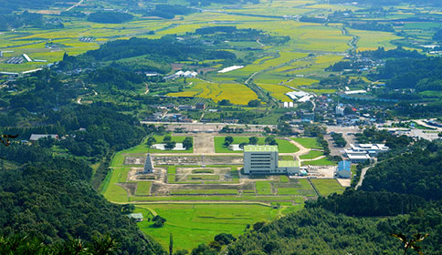
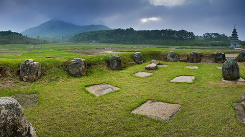
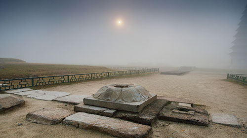
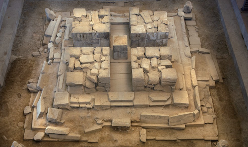

미륵사지는 익산시 금마면 해발고도 430m의 미륵산 아래 넓은 평지에 펼쳐져 있어 동아시아 최대 규모의 사역을 자랑한다.
백제 사찰로는 이례적으로 『삼국유사(三國遺事)』에 미륵사 창건 설화가 전한다.
무왕 부부가 사자사(師子寺)에 가던 도중 용화산 밑의 연못에서 미륵삼존(彌勒三尊)이
나타났는데, 왕비의 부탁에 따라 이 연못을 메우고 세 곳에 탑과 금당, 회랑을 세웠다고
한다. 이 설화를 통해 확인할 수 있는 사실은, 우선 미륵사가 백제의 국력을 모은 국가적
가람이었고, 습지를 매립하여 평지를 조성하였으며, 미래의 부처인 미륵이 하늘에서
내려와 세 번의 설법을 통해 모든 사람을 구제한다는 불교경전의 내용에 따라 가람배치를
구현했다는 점이다. 이들 사항은 1974년부터 이어진 23년간의 고고학적 조사를 통해
대부분 사실로 드러났다. 조사 결과 사찰의 창건 연대는 무왕 재위기인 7세기 초이고,
임진왜란(壬辰倭亂)을 전후하여 폐사(廢寺)된 것으로 밝혀졌다.
미륵사는 중문-탑-금당이 일직선상에 배열된, 이른바 백제식 <1탑-1금당>
형식의 가람 세 동을 나란히 병렬시켜 특이한 구조를 이루고 있다. 물론
양의 동원(東院)과 서원(西院)보다는 가운데 중원(中院)의 면적과
금당 및 탑의 규모가 더 커 중심을 형성하였다.
동중서(東中西) 3개 원은 각기 긴 회랑으로 구획되어 독립된 공간을
이루지만, 북쪽으로는 1동의 큰 강당터로 연결된다. 즉 예불공간을 3개 원으로
분화되었지만, 강당은 하나로 전체를 통합하는 역할을 한다. 강당과 연결된 북
·동·서 회랑터에는 후대 승방(僧房)으로 사용된 흔적도 발견되었다.



뒤쪽 미륵산에서 발원한 물길은 가람의 네 면에 걸쳐 인공 물길로 정리되었고,
가람의 남쪽 정면에 큰 연못을 조성했던 흔적도 나타났다. 또한 강당 북쪽에는 두 개의 다리가
있어서 인공 물길을 건너 뒤편의 후원(後園)지역으로 연결되었다. 원래 습지였던
곳이어서 각별히 치밀하게 배수 처리를 한 점과 아울러, 각 원의 금당도 특별한 구조로
습기를 예방하였다. 금당 바닥에는 지대석(地臺石)을 깔고 그 위에 1m 정도 높이의
주춧돌을 마름모꼴로 놓았으며, 초석 위에 귀틀목을 걸친 흔적이 있다. 따라서 금당
바닥에 빈 공간을 만들었던 것으로 보인다.
이렇듯 백제는 1탑 1금당의 사찰구조를 바탕으로 불교의 미륵신앙을 구현하기 위해
<3탑-3금당>이라는 독특한 사찰구조로 미륵사를 만들었다. 백제인들은 이 미륵사를
통하여 누구나 평등한 삶을 염원했던 미륵하생의 꿈을 이룩하려 하였고, 이로써 모든
백성들의 구원을 이루려는 간절한 염원이 반영되어 만들어진, 고대 백제인들의 신념의
결정체라 할 수 있을 것이다.
본래 미륵사에는 3기의 탑이 있었다. 중원(中院)에는 목탑이, 동원(東院)과 서원(西院)
에는 각각 석탑이 있었다. 중원의 목탑이 언제 소실되었는지는 알 수 없다. 동·서원의 석탑
중 동원의 석탑은 발굴 당시 완전히 무너져 내려 석탑에 이용된 석재들이 주변에 흩어지고
그 중 일부는 외부로 유출되어 복원이 불가능한 상태였다. 서원의 석탑은 최근까지
불안하게나마 그 형태를 유지하고 있었고, 많은 부분이 훼손된 채 동북 측면으로만
6층까지 남아 있었다.
이 석탑은 1998년 구조안전진단 결과 안정성이 우려되어 2001년부터
국립문화재연구소에서 석탑의 해체조사 및 보수정비를 추진하고 있다. 2002년부터
본격적인 해체조사 및 학술연구가 진행되고 있다.
미륵사지석탑은 발굴 조사 때 동탑지에서 노반석(露盤石)과 없어졌던 지붕돌이
출토되었는데, 이를 서탑과의 비례를 바탕으로 컴퓨터로 계산하여 복원한 결과
9층탑이라는 결론에 이르렀다. 이와 같은 결론에 따라 1992년 미륵사지 동원에 석탑을
복원하였는데, 복원된 높이는 총 24m다. 오늘날까지 남아 있는 신라의 석탑 중 가장 높은
경주 감은사지석탑이 13m인 점으로 미루어 볼 때 미륵사지석탑은 그 두 배에 가까운
규모가 되는 셈이다.
한편 2009년 서원의 석탑에 대한 1층 해체조사를 진행하던 중 심주석 상면 중앙에서
사리공이 발견되었고, 사리공 주변에는 십자(十字) 먹선과 석회로 밀봉한 흔적이
남아있었다. 사리장엄은 사리공 안에 안치되어 있었는데 사리호, 금제사리봉영기,
은제관식, 청동합 등 다양한 공양품이 일괄로 출토되었다.
사리봉영기의 판독 결과 석탑은 639년 사리를 안치하면서
건립되었다는 것이 밝혀졌는데, 미륵사가 백제 무왕 집권시대에
창건되었다는 역사 기록이 정확함을 입증해
준 보기 드문 사례이다.
규모가 되는 셈이다.
